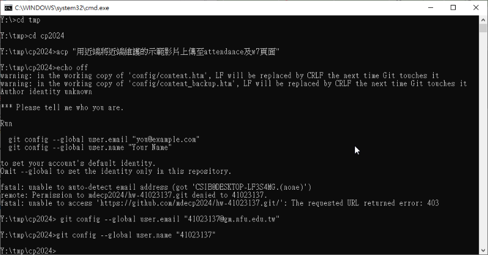

References <<
Previous Next >> HW 1
Attendance
w1:介紹課程內容
w2:創建個人倉儲和網站
w3:
1.學習讓可攜程式環境以電腦的速度執行
下載可攜程式套件 python_2025_lite.7z
以 start_ipv6.bat 開啟隨身碟中的可攜程式環境
在SciTE任一個視窗中輸入
@echo off
REM 下載 python_2025_lite.7z
curl --user kmolab:kmolab --output C:\Users\%USERNAME%\Downloads\python_2025_lite.7z "http://229.cycu.org/python_2025_lite.7z"
REM 解開壓縮檔案至 C:\
"C:\Program Files\7-Zip\7z" x C:\Users\%USERNAME%\Downloads\python_2025_lite.7z -oC:\ -y
在隨身碟中任意位置以任意檔名儲存為bat檔(例：download.bat)
之後每次打開電腦之後都可以點擊這個執行檔讓可攜程式環境以電腦的速度執行
2.Creating the basics 資料整理
啟動可攜程式系統後, 在命令列中:
y:\>cd notebook
y:\notebook>jupyter lab --collaborative
就可以選擇用 edge 開啟 http://localhost:8888/lab/
3.學習python語法："string"、input和print
例：
sum = 'Hello'
name = input ("your name")
sum1 = (sum+name)
print(sum1)
w4:颱風天放假
w5:
1.學習print的用法
例：
#單行註解
#help(print)
'''這個三引號所界定的區域被 Python 視為多行註解'''
a = "一個字串"
print(a, a, a, sep='*', end='')
print(a)
sep是每個逗點分隔開的間隔所插入的符號，end是指輸出完字串後產生的字符，預設是\n(換行符號)
如上述例子中end=''就是第一串print輸出後什麼字符都不產生，直接將第二串print加在後方
再舉個例子：
print("Hello", end='')
print(" World")
這樣就會輸出Hello World
使用方式：在SciTE中輸入完後點選Too1s當中的Go，點clear output可以清空輸出
點選View當中的Line Numbers可以顯示行數
2.學習range的用法
例：
#help(range)
for i in range(1, 6, 2):
前兩個數字是範圍，若輸入1和6則會輸出1到5，第三個數字代表每隔幾個數字輸出一次
如範例這樣輸入的話，就會輸出1,3,5
如果只輸入一個數字的話就會輸出0到輸入的數字，例：range(5)就會輸出0到5
3.練習列印星號金字塔
a = 5
b = a * 2
for i in range(a):
spaces = b - (2 * i + 1)
print(' ' * (spaces//2), end='')
print('*' * (2 * i + 1))
在SciTE中執行時歪了，所以嘗試在cmd中執行
先把儲存的.py檔案丟到data/tmp/python_ex
然後開啟cmd，cd到python_ex之後執行python 檔名
w6:學習使用 Python 控制 CoppeliaSim
操作步驟:
- 下載 python_2025_lite.7z (可攜程式環境)
- 下載 zmq_remote_api_ex_cube_triangle.7z (利用 Python 控制模擬場景中的物件)
- 進入可攜程式環境中 data/CoppeliaSim 目錄, 開啟 coppeliaSim.exe (機電整合模擬程式, 原始碼)
- 啟動可攜程式環境, 雙點擊 start_ipv6.bat, 系統會啟動四個命令列, 兩個 SciTE 編輯器
- 執行場景控制程式前, 先處理操作系統的防火牆, 將下列指令存為 .bat 檔案後, 以管理員身分執行, 以便開啟 23000-23050 埠號進出:
-
netsh advfirewall firewall add rule name="allow_23000-23050" dir=in action=allow protocol=TCP localport=23000-23050
netsh advfirewall firewall add rule name="allow_23000-23050" dir=out action=allow protocol=TCP localport=23000-23050
- 開啟 CoppeliaSim 中的視覺串流伺服器: Modules - Connectivity - Visualization stream
- 利用 SciTE 開啟 put_cubes_into_scene_1.py, 利用 Tools - Go 執行操控程式
- 使用者可以透過瀏覽器, 以模擬場景所在電腦的 IP, 且埠號為 23020 觀看模擬場景，在網頁輸入localhost:23020就可以進入，其他人也可以將localhost改為該電腦IP進入其模擬場景，例：該電腦IP為120.113.99.8，網址輸入120.113.99.8:23020即可進行連線
- 搜尋電腦IP位址的方式：在cmd中輸入ipconfig /all，找到IPv4位址
w7:
1.學習使用ShareX錄影
下載可攜程式套件 python_2025_lite.7z
開啟python_2025_lite\data\sharex中的sharex.exe
接著按住鍵盤上的shift之後同時點fn跟f9，然後選取要錄製的畫面範圍，就可以開始進行錄製
最後再按一次shift、fn和f9即可結束錄製
2.學習將Brython加入自己的網頁當中
到https://mde.tw/cp2024/content/Environment.html將裡面的Brython超文件複製下來
在edit中點擊Source code將複製的內容貼到要的位置
練習影片：https://mdecp2024.github.io/hw-41023137/content/w7.html
3.學習如何在近端進行倉儲與網站的維護
啟動可攜程式環境, 雙點擊 start_ipv6.bat, 系統會啟動四個命令列, 兩個 SciTE 編輯器
接著到自己的倉儲中點擊code，將HTTPS中的網址複製下來，然後回到命令列中
先利用cd tmp移動到tmp的目錄中，輸入接著輸入：
git clone 複製的網址 想儲存的近端名稱，就可以將倉儲克隆到近端
例：假設用我的倉儲，儲存的名稱為cp2024，就輸入：
git clone https://github.com/mdecp2024/hw-41023137.git cp2024
然後按enter執行，就能將倉儲以cp2024的名稱儲存在tmp的目錄下
接著打開github帳號，進到Settings/Developer Settings/Personal access tokens (classic)\Tokens (classic)
點擊Generate new token (classic)，在Note欄位輸入建立的Token名稱，並將expiration(截止時間)設為no expiration，這樣token就不會過期，過期的token需要重新設定，最後按下Generate token產生代碼，然後複製下來
接下來用SciTE打開python_2025_lite\data\tmp\cp2024\.git中的config，將剛剛複製的Token代碼貼到url的github.com前面再加一個@，變成https://Token代碼@github.com/mdecp2024/hw-41023137.git，再點擊save儲存
之後就可以透過近端進行倉儲維護，透過命令列cd到tmp的cp2024，然後輸入cms按enter執行
將系統回傳的網址貼到瀏覽器上就可以開啟近端進行維護，修改並轉靜態完畢後就在命令列輸入以下指令：
acp "儲存的名稱" 就能夠以儲存的名稱推到倉儲上修改網頁內容

w8:學習建立虛擬主機
使用 VPN 或位於校網, 下載 Windows 1809 ISO, 然後利用 Virtualbox 以虛擬主機安裝 Windows 操作系統.
其他教育版軟體下載: https://software.nfu.edu.tw/
安裝完成後, 可以直接利用 win10_2024.vdi 建立一個虛擬的 Windows 10 操作系統環境. 或者下載 win10_2024_vdi.7z, 使用已經配置 Firefox, 7zip, 以及 python_2025_lite.7z 的虛擬主機檔案.
接下來就可以利用虛擬主機自行配置計算機程式所需的網路與 Python 可攜套件.
建立使用者:
利用指令建立 Windows 10 下的使用者帳號:
先利用管理者身分啟動一個 cmd (命令提示字元視窗)
利用 net user 帳號名稱 密碼 /add 指令, 建立使用者登入名稱為: 帳號名稱, 其登入密碼為: 密碼
修改 uuid:
利用 VBoxManage.exe 修改 win10_2024.vdi 的 uuid, 因為在同一套 Virtualbox 上的各個虛擬主機檔案, 必須要有不同的 uuid.
D:\VirtualBox\VBoxManage internalcommands sethduuid "c:\tmp\win10_2024.vdi"
w9：填寫期中成績自評表
w10:隋堂測試 Exam1
在個人網頁標題為 "HW 1 Exam" 頁面之後, 加上一個第三階的頁面, 標題為 "w10".
並在 "w10" 頁面中完成隨堂考試內容
心得：我在這次的練習中，重新學習了之前所學的執行python檔案的各種方法，除了最簡單能夠直接貼上執行的brython之外，還有需要先存檔才能執行SciTE，以及將剛存的檔案利用python+檔名執行的cmd，比較讓我印象深刻的是最後的jupyter lab以及codespaces，jupyter lab除了之前上課有教過一次怎麼開啟之後我就再也沒開過了，所以真的就是自己摸索怎麼在裡面執行python程式碼，今天也是第一次知道原來第二次以後開啟jupyter lab都要輸入密碼，而那串密碼則會顯示在cmd開啟jupyter lab之後的回傳訊息中。最後是我最常使用的codespaces，雖然是最熟悉的，不過一開始我還真的不知道要怎麼用這個執行python程式碼，跟cmd一樣，直接輸入在終端機是不行的，後來我想到cmd可以先將程式碼存檔再cd到該目錄中用python+檔名執行，所以我就試著在codespaces中新增一個.py檔案，然後再一樣利用python+檔名執行，還有一定要先cd到該檔案的目錄，不然會找不到檔案
w11:學習上週作業的作法並複習近端倉儲維護
教學：https://mde.tw/cp2024/content/Exam1.html
w11_hw：https://mde.tw/cp2024/content/w11_hw.html
w12:抽查並學習上周作業的程式碼內容以及除錯
note:按tab可以縮排，按shift+tab可以取消縮排
矩形畫法：rect(左上角基準x座標, 左上角基準y座標 , 矩形x軸長度, 矩形y軸長度)
w12_hw：https://mde.tw/cp2024/content/w12_hw.html
w13:
1.檢查w10到w12作業並修改list和index將退選成員刪除
檢查頁面：https://nfuedu-my.sharepoint.com/:x:/g/personal/yen_nfu_edu_tw/EdI55F_F5ndJiRBfAKTYpZgB6bTLWOGyXcpS_X7Jzieoyw?e=R4pgmR&clickparams=eyJBcHBOYW1lIjoiVGVhbXMtRGVza3RvcCIsIkFwcFZlcnNpb24iOiIxNDE1LzI0MTAyMDAxMzE4In0%3D
2.學習如何利用rect畫矩形，以及將矩形直接畫在頁面上
w13頁面：https://mdecp2024.github.io/hw-41023137/content/w13.html
w13_hw：https://mde.tw/cp2024/content/w13.html
w14:學習利用函式判斷圓形交疊位置
w14頁面：https://mdecp2024.github.io/hw-41023137/content/w14_ex.html
w14_hw：https://mde.tw/cp2024/content/w14_ex.html
from browser import html
from browser import document as doc
import math
# 利用 html 建立 canvas 超文件物件
canvas = html.CANVAS(width=600, height=600) # 調整畫布大小以容納圓形
brython_div = doc["brython_div1"]
brython_div <= canvas
ctx = canvas.getContext("2d")
grid_size = 10
ctx.lineWidth = 1
def draw_circle(x, y, r, color):
ctx.beginPath()
ctx.arc(x, y, r, 0, 2 * math.pi) # 圓心在(x, y)，半徑為r
ctx.fillStyle = color
ctx.fill() # 填充顏色
ctx.stroke()
def draw():
ctx.clearRect(0, 0, canvas.width, canvas.height) # 清除畫布
# 圓心1和圓半徑
x1, y1, r1 = 200, 200, 141.4 # 圓心1 (200, 200)，半徑141.4
x2, y2, r2 = 300, 300, 141.4 # 圓心2 (300, 300)，半徑141.4
# 繪製兩個圓 (不同顏色填充)
circle1 = draw_circle(x1, y1, r1, 'lightblue') # 第一個圓的區域填充藍色
circle2 = draw_circle(x2, y2, r2, 'lightgreen') # 第二個圓的區域填充綠色
# 判斷圓是否重疊
dist = math.sqrt((x2 - x1) ** 2 + (y2 - y1) ** 2) # 計算兩圓圓心之間的距離
if dist < r1 + r2: # 如果兩圓重疊
# 計算交集區域的範圍
# 用顏色填充交集區域
ctx.beginPath()
# 假設這是一個簡化的交集區域繪製 (具體交集邊界會比較複雜)
ctx.arc((x1 + x2) / 2, (y1 + y2) / 2, min(r1, r2), 0, 2 * math.pi)
ctx.fillStyle = 'purple' # 交集區域填充紫色
ctx.fill()
# 可選：繪製圓邊框 (黑色)
ctx.strokeStyle = 'black'
ctx.lineWidth = 2
ctx.beginPath()
ctx.arc(x1, y1, r1, 0, 2 * math.pi)
ctx.stroke()
ctx.beginPath()
ctx.arc(x2, y2, r2, 0, 2 * math.pi)
ctx.stroke()
# 繪製
draw()
w15:學習利用函式和迴圈計算數字總和
note:要讓函式引用外面的全域變數要在變數名稱前面加上global
w15頁面：https://mdecp2024.github.io/hw-41023137/content/w15.html
w15_hw：https://mde.tw/cp2024/content/w15.html
w16:隋堂測試 Exam2
Ex:w16_exam2_Zoom
出席 (10%) - 自行舉證評分
自行利用 Github commits 提交記錄評分.
References <<
Previous Next >> HW 1